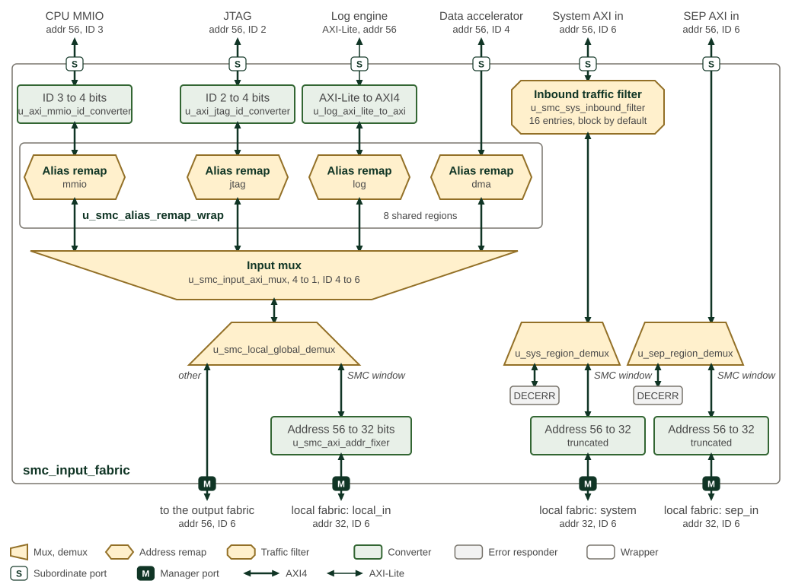
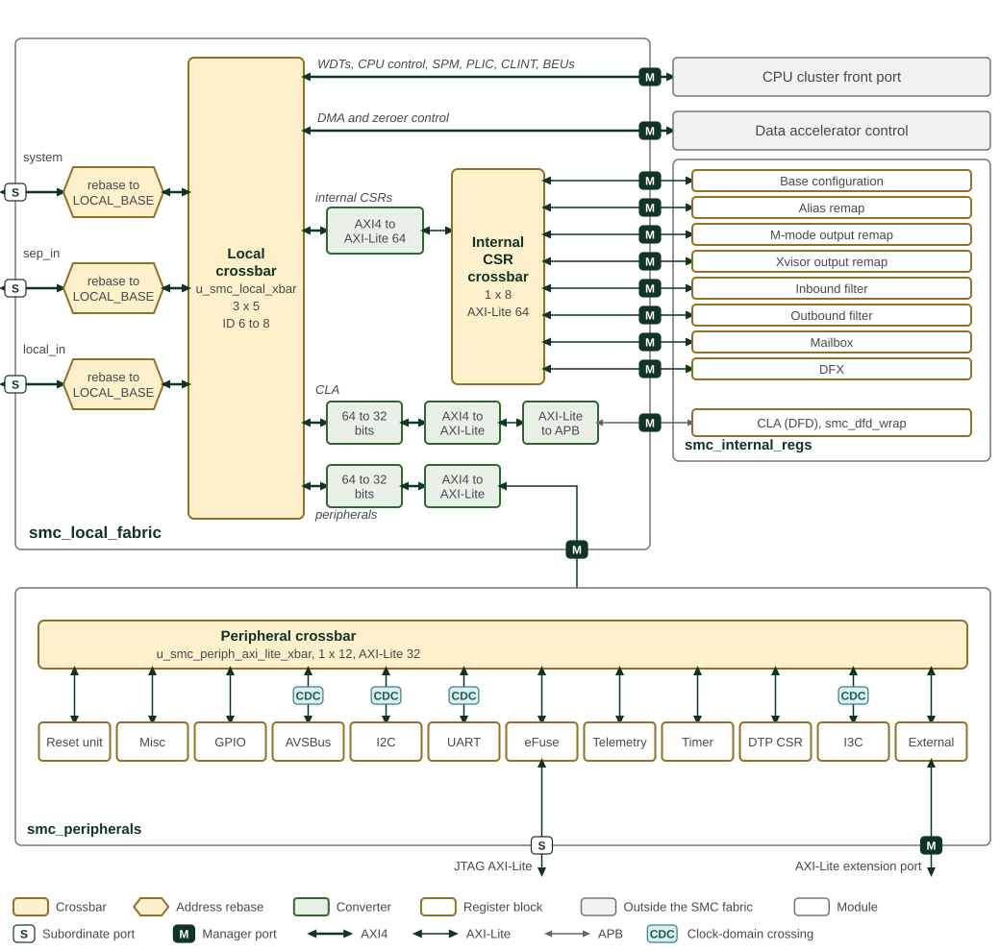
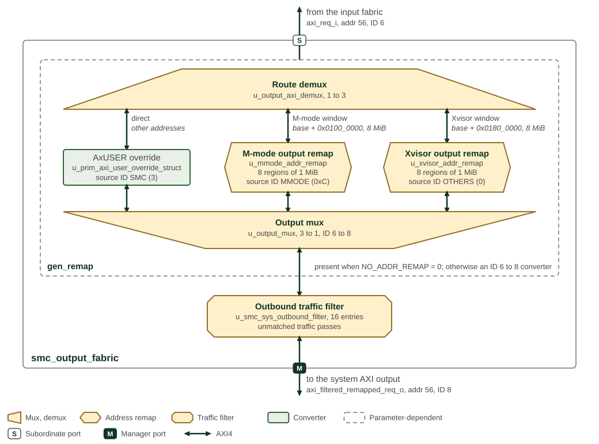
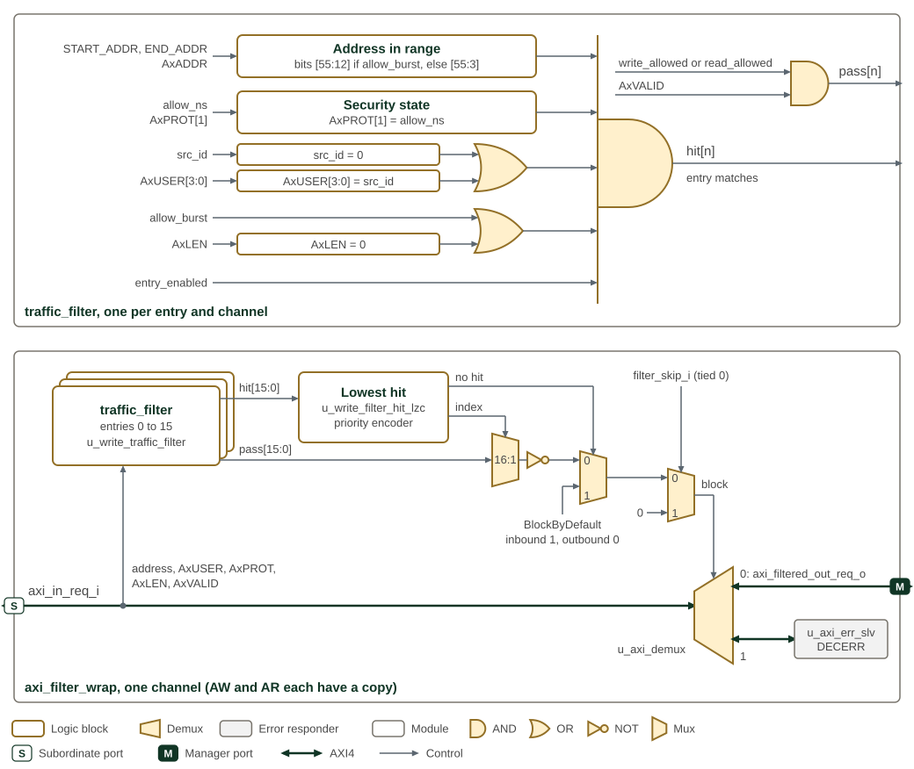

Interconnect
The SMC fabric provides interconnect infrastructure with address management, traffic filtering, and security enforcement mechanisms.
1. Topology
1.1. Fabric Topology
The input fabric merges the SMC’s own initiators, filters the system AXI input and splits traffic between the SMC window and the rest of the system. The local fabric connects the traffic for the SMC window to the CPU front port and the SMC register islands, and the output fabric remaps and filters the traffic that leaves the SMC.
The input paths are shown in SMC input fabric topology and routing, the local resource connections in SMC local fabric and peripheral islands, and the outbound path in SMC output fabric and remapping paths. The three figures share the notation of the SEP fabric figures. Crossbars are rectangles, muxes and demuxes are trapezoids with the wide side towards the many ports, address remaps and rebases are hexagons and traffic filters are octagons. Green boxes are converters: address-width, data-width, ID-width and protocol conversion. Thick lines are AXI4 and thin lines AXI-Lite; every AXI data path is 64 bits wide unless a converter narrows it. The labels give the address and ID widths where they change, and the port badges mark where a path crosses the module boundary.

SMC input fabric topology and routing has the six inputs of smc_input_fabric along
the top and its four outputs along the bottom. The CPU MMIO and JTAG ports have
their IDs widened to 4 bits and the log engine’s AXI-Lite port is converted to
AXI4. Each of the four SMC-internal initiators then passes its own alias remap;
the four remaps share one table of eight regions with a 4 KiB granule. The
input mux merges them, widens the ID to 6 bits and registers every channel. The
demux behind it sends addresses inside the SMC window, at either the local or
the global base and REGION_SIZE long, to the local_in initiator of the local
fabric with the address truncated to 32 bits, and every other address to the
output fabric. The system AXI input passes the inbound traffic filter, whose
clock can be gated while the port is idle. The system and SEP inputs then each pass
a region demux: the SMC window continues to the local fabric, truncated to 32
bits, and every other address receives DECERR. The SEP input is not filtered.

SMC local fabric and peripheral islands shows smc_local_fabric in the upper left, the
smc_internal_regs island on the right and the smc_peripherals island along
the bottom. The three initiators arrive from the input fabric. Each is rebased
onto the local base: the offset within REGION_SIZE is kept and the upper
address bits are replaced by those of LOCAL_BASE, so a request for the global
window reaches the same register as one for the local window. The local
crossbar u_smc_local_xbar connects every initiator to every target, widens the
ID to 8 bits, registers every port and answers unmapped addresses with DECERR,
as do the internal CSR and peripheral crossbars. Its targets, in port order, are
the CPU cluster front port, the data accelerator control port, the internal CSR
crossbar, the peripheral crossbar and the CLA register window of the DFD block,
which is reached over APB. The converters in front of the last three belong to
smc_local_xbar. In the peripheral island, the AVSBus, I2C, UART and I3C
register ports cross to the peripheral clock, the DTP CSR window is rebased to
zero, and the eFuse registers have a second AXI-Lite port for JTAG access. The
last peripheral crossbar target leaves the SMC as the AXI-Lite extension port.

SMC output fabric and remapping paths follows a request from the input fabric to the
system AXI output. The route demux selects by address. The 8 MiB M-mode window
at 0x0100_0000 and the 8 MiB Xvisor window at 0x0180_0000, each above either
the local or the global SMC base, go through their output remaps; every other
address goes straight through. Each output remap divides its window into eight
1 MiB regions and replaces address bits [55:20] with the region’s offset. Each
path also sets the AxUSER source ID
(SMC Source ID by Traffic Path). The output mux merges the three paths
and widens the ID to 8 bits. The dashed outline marks the stage that the
NO_ADDR_REMAP parameter removes: smc_config_pkg clears it, so the remap
stage is present, and setting it leaves only an ID converter from 6 to 8 bits,
without the source ID override. The outbound traffic filter passes traffic that
matches no entry.
1.2. Configuration Parameters
The fabric modules take parameters for the number of inbound and outbound filter entries, filter pipelining, the outstanding-transaction limit of the output fabric remap path, alias address remap enablement, and the M-mode and Xvisor remap region bases.
The parameters of smc_fabric are listed in smc_fabric.
The parameters of smc_output_fabric are listed in smc_output_fabric.
Further outstanding-transaction limits are fixed by package constants rather than module parameters (SMC Fabric Transaction Limits).
| Constant | Value | Description |
|---|---|---|
AXI4 Network |
||
|
32 |
Maximum outstanding transactions per AXI ID bucket in the fabric demultiplexers and traffic filters |
|
32 |
Maximum outstanding transactions for each error subordinate, across all IDs |
|
8 |
Maximum outstanding
transactions each manager connected to the local AXI4 crossbar
|
|
8 |
Maximum outstanding
transactions each subordinate connected to the local AXI4 crossbar
|
AXI4-Lite Network |
||
|
4 |
Maximum outstanding transactions each manager connected to the local fabric AXI4-Lite crossbar can have in flight |
|
4 |
Maximum outstanding transactions each subordinate connected to the local fabric AXI4-Lite crossbar can have in flight |
These limits set the buffering depth of the fabric. The AXI4 limits bound the outstanding high-performance traffic, while the AXI4-Lite limits bound outstanding transactions to peripherals and configuration registers.
1.3. Dual-Network Architecture
The SMC fabric implements two separate networks optimized for different traffic types (SMC Network Characteristics).
| Network | Connected Components | Protocol | Optimization Target |
|---|---|---|---|
High-Performance |
CPU cluster, SRAM, DMA, filtering, external AXI ports |
AXI4 |
Bandwidth, low latency |
Low-Performance |
Peripherals, sensors, configuration registers |
AXI4-Lite |
Reliability, deterministic access |
Both networks use 64-bit data bus width for consistent data handling. The CPU cluster connects to the fabric through AXI4 (high-bandwidth data path) and AXI4-Lite (MMIO) interfaces; internally, the cluster uses a TileLink bus that is protocol-bridged at the cluster boundary.
2. Interfaces
2.1. AXI Interface Widths
AXI Common Signal Widths lists the common AXI signal widths shared across all AXI4 fabric interfaces.
| Signal | Width (bits) | Description |
|---|---|---|
DATA_WIDTH |
64 |
Data bus width for all AXI4 interfaces |
STRB_WIDTH |
8 |
Write strobe width (DATA_WIDTH / 8) |
ADDR_WIDTH (system) |
56 |
Address width on system-facing external ports |
ADDR_WIDTH (local) |
32 |
Address width on SMC-internal interfaces |
USER_WIDTH |
12 |
User sideband width for all AXI4 channels |
The AXI transaction ID width varies at each fabric stage because crossbars and multiplexers prepend additional bits to distinguish the originating port. AXI ID Widths by Fabric Stage lists the ID width at each point in the fabric.
| Fabric Stage / Port | ID Width (bits) | Direction |
|---|---|---|
System AXI input (sys_axi_in) |
6 |
Inbound |
JTAG AXI input (jtag_axi_in) |
2 |
Inbound |
SEP AXI input (sep_axi_in) |
6 |
Inbound |
Input fabric (slave side) |
4 |
Internal |
Local / Output fabric (slave side) |
6 |
Internal |
Local fabric crossbar (master side) |
8 |
Internal |
Output fabric (master side) |
8 |
Outbound |
System AXI output (output_axi) |
8 |
Outbound |
Some internal paths also use a 32-bit data width for AXI4-Lite peripheral access, with corresponding STRB_WIDTH of 4 bits.
2.2. Traffic Managers and Subordinates
The SMC fabric supports multiple traffic sources (managers) and destinations (subordinates), providing flexible routing with security enforcement.
2.2.1. Traffic Managers
Traffic managers initiate transactions on the fabric, accessing both local and remote resources through the dual-network architecture.
SMC Fabric Traffic Managers identifies the transaction initiators and their primary paths.
| Manager | Count | Primary Paths | Key Features |
|---|---|---|---|
CPU Cluster |
1 |
Local (SRAM, PLIC, CLINT, WDT), External (filtered/remapped) |
Dual routing paths, privilege-based control, L2 coherent access |
DMA Controller |
1 |
Alias remap → filtering → destination |
High-bandwidth data movement, security enforcement |
JTAG2AXI Bridge |
1 |
Alias remap → filtering → destination |
Debug and test access, privilege control |
Log Engine |
1 |
Alias remap → filtering → destination |
System logging, telemetry collection |
The CPU cluster provides multiple interface types: the local path optimized for minimal latency to local resources, the external path with filtering and remapping for system-wide access, the MMIO interface for register access with privilege-based control, and the L2 coherent path for cache-coherent high-bandwidth operations.
Traffic from DMA, Log Engine, JTAG2AXI, and CPU external path passes through alias remap logic before reaching their destination, enabling flexible address management between local and global address spaces.
2.2.2. Traffic Subordinates
Traffic subordinates respond to transactions initiated by the managers, organized by network type and function.
SMC Fabric Traffic Subordinates identifies the transaction targets and their network connections.
| Subordinate | Count | Network | Function |
|---|---|---|---|
SRAM |
1 |
AXI4 (High-Performance) |
Local instruction and data memory |
PLIC |
1 |
AXI4 (High-Performance) |
Platform-level interrupt controller |
CLINT |
1 |
AXI4 (High-Performance) |
Core-local interrupt controller, timer |
Watchdog Timer |
1 |
AXI4 (High-Performance) |
System integrity monitoring |
Local Peripherals |
Multiple |
AXI4-Lite (Low-Performance) |
SMC peripheral blocks (UART, I2C, GPIO, etc.) |
Configuration Registers |
Multiple |
AXI4-Lite (Low-Performance) |
Fabric control, filtering, remapping |
External AXI Input Ports |
3 |
AXI4 (High-Performance) |
System NoC (sys_axi_in), JTAG debug (jtag_axi_in), SEP (sep_axi_in) |
External AXI Output Port |
1 |
AXI4 (High-Performance) |
System NoC interface (output_axi) |
Error Slave |
1 |
Both networks |
Invalid address response generation |
The subordinates are distributed across both networks based on their performance requirements and access patterns. High-performance subordinates (SRAM, PLIC, CLINT, WDT, external ports) connect to the AXI4 network for maximum bandwidth and minimal latency, while low-performance subordinates (peripherals, configuration registers) use the AXI4-Lite network for reliable, deterministic access.
3. Address Remapping
The SMC fabric implements two complementary address remapping mechanisms: alias remapping in the input fabric and privilege-controlled remapping in the output fabric.
3.1. Alias Remapping
Alias remapping translates local SMC addresses to global system addresses, decoupling software-visible addresses from physical assignments. This simplifies integration and software portability, letting local agents access resources consistently across different SoC mappings.
The alias remap logic organizes eight independently configurable regions, each specifying an input address range, a remap offset for translation, and an AxCACHE value that replaces the transaction’s own on a hit. This enables:
-
Translation between local alias addresses (0xC000_0000 at reset) and global addresses, ensuring compatibility with both internal and external software
-
Support for multiple software images by allowing address regions to be reassigned for different execution instances
-
Setting cacheable attributes on locally initiated transactions for optimal performance
At reset, remap logic defaults to transparent mapping (no remap), using the local alias base address (0xC000_0000) for local resources until programmed. The Programmer’s Guide gives the aperture programming sequence.
3.2. Privilege-Controlled Remapping
Privilege-controlled address remapping enables programmable translation of outbound SMC transactions for software running at different privilege levels. The output fabric selects a remap by the address window a request targets, not by the initiator’s AxPROT privilege bit, and each remap sets its own source ID.
The fabric provides separate remap regions for Machine-mode (highest privilege) and Xvisor/Hypervisor (intermediate privilege) operations. When accessing shared resources like shared memory, SMC traffic passes through the appropriate privilege-controlled remap stage to ensure proper address translation and privilege enforcement.
4. Filtering and Protection
The filtering system (filter_ctrl.rdl) provides security control for
both inbound and outbound traffic, examining transaction attributes to
enforce access policies.
The SMC inbound and outbound filters are instances of the same
axi_filter_wrap block used by SEP, and share its decode algorithm:
entry priority, the match conditions, the address range granule and its
widening direction, and the response returned to a blocked initiator.
That algorithm is documented once with the IP.
See AXI Traffic Filter.
Both SMC filters have 16 entries, carry 56-bit addresses on a 64-bit data bus, and enable NS and source ID matching. They differ in how they treat traffic that matches no entry: the inbound filter blocks it, and the outbound filter permits it.
4.1. Inbound Filtering
SMC inbound and outbound traffic-filter mechanism shows the decode that both filters implement. Their places in the fabric are in SMC input fabric topology and routing and SMC output fabric and remapping paths.

The figure draws primitive logic with gate symbols and keeps labelled boxes
for comparisons and larger blocks. The upper part of
SMC inbound and outbound traffic-filter mechanism is one traffic_filter, instantiated for every
entry on each of the AW and AR channels. The entry hits when all five
conditions on the left hold, which the AND gate with the extended input bar
combines; the source ID and burst conditions are each an OR of two terms. Its
permission bit, ANDed with the channel’s valid, is evaluated separately. The
lower part is one channel of axi_filter_wrap. A priority encoder picks the
lowest-numbered entry that hits, a 16:1 mux selects that entry’s permission
bit, and the inverted bit requests a block. When no entry hits, the next mux
takes BLOCK_BY_DEFAULT instead. The last mux forces the block bit to 0 when
filter_skip_i is set; filter_skip_i is tied low in both SMC instances.
Group ID matching is not built into either instance. The block bit steers the
transaction through a demux either to the filtered output or to an error
responder that returns DECERR.
Inbound filtering protects SMC resources from unauthorized external access by evaluating three dimensions of each transaction:
-
Address-based control: Defines precise access zones, protecting memory-mapped registers and internal memory from unauthorized external requests
-
Source ID authorization: Permits or blocks accesses based on the originating system component’s identity, ensuring only trusted sources access sensitive resources
-
Protection attribute filtering: Examines AXI protection signals (security and privilege attributes) to differentiate between secure vs. non-secure or privileged vs. user transactions
The default filter configuration varies by chiplet type. Most SMC instances default to blocking all external transactions until access policies are configured. The Programmer’s Guide gives the filter programming rules.
The inbound filter interface provides 16 independent filter instances, each configurable with its own address ranges, source ID matching, and protection attribute policies.
4.2. Outbound Filtering
The outbound filter uses explicit matching entries to allow or block
SMC-initiated requests. Unmatched requests pass because this instance uses
BLOCK_BY_DEFAULT = 0. An allow entry is therefore not an allowlist: denying
traffic requires a matching entry whose read or write permission is clear.
Address, source ID, and NS matching select an entry. The filter does not infer software privilege or grant broader access to a higher privilege mode.
All outbound traffic, after passing through any privilege remap stages, is subject to outbound filtering enforcement based on address, security attributes (NS), and source ID. The outbound filters use the same register structure as inbound filters.
4.3. Protection Requirements
The SMC fabric implements two types of protection-based filtering mechanisms to enforce security policies based on AXI protection attributes:
4.3.1. AXI Protection Bit Encoding
AXI protection bits (aw.prot and ar.prot) are 3-bit fields that
encode transaction security and privilege attributes (SMC AXI Protection Bit Encoding).
| Bit [2] | Bit [1] | Bit [0] | Value | Description |
|---|---|---|---|---|
0 |
0 |
0 |
0x0 |
Data, Secure, User |
0 |
0 |
1 |
0x1 |
Data, Secure, Privileged |
0 |
1 |
0 |
0x2 |
Data, Non-Secure, User |
0 |
1 |
1 |
0x3 |
Data, Non-Secure, Privileged |
1 |
0 |
0 |
0x4 |
Instruction, Secure, User |
1 |
0 |
1 |
0x5 |
Instruction, Secure, Privileged |
1 |
1 |
0 |
0x6 |
Instruction, Non-Secure, User |
1 |
1 |
1 |
0x7 |
Instruction, Non-Secure, Privileged |
4.3.2. Non-Secure Bit Filtering (AXI4 Filters)
The primary protection filtering mechanism for AXI4 full interfaces
examines the Non-Secure (NS) bit (prot[1]) to control secure vs.
non-secure access. This filtering is implemented in both inbound and
outbound traffic filters.
Each filter entry in the 16 inbound and 16 outbound filter instances
includes an allow_ns configuration field. It is an equality test
against the transaction’s NS bit, not a permission grant, so an entry
covers one security state only:
-
When
allow_ns = 0: the entry matches secure transactions (prot[1] = 0) only -
When
allow_ns = 1: the entry matches non-secure transactions (prot[1] = 1) only
Covering both security states over one address range therefore takes two
entries. An entry whose allow_ns does not match the transaction does
not deny it; the transaction falls through to the remaining entries, as
described in the AXI Traffic Filter decode section referenced above.
This filtering occurs in axi_filter_wrap, where each transaction’s
aw.prot[1] (write) or ar.prot[1] (read) is compared against the
filter’s allow_ns configuration. A matching deny entry routes the transaction to an error slave, which returns
a decode error. With no matching entry, the inbound instance blocks the
transaction and the outbound instance passes it.
4.3.3. Full 3-Bit Protection Matching (AXI-Lite)
The fabric filters examine only the NS bit. Exact matching on all three
protection bits is performed by an AXI-Lite peripheral that provides its own
ACCESS_FILTER register, after the fabric has routed the transaction to it.
In the SMC, the GPIO interface bank performs this check; see
GPIO. Adopter blocks in the external window
that carry an ACCESS_FILTER register define the same fields.
The full protection matching requires an exact match between the transaction’s protection bits and a configured requirement:
-
awprot_requirement[2:0]: Required protection value for write transactions -
arprot_requirement[2:0]: Required protection value for read transactions -
write_filter_enable: Enable write protection filtering -
read_filter_enable: Enable read protection filtering
When filtering is enabled, only transactions with matching protection values are allowed through. All other transactions receive an error response. The protection bits are transaction attributes, not an initiator identity, so this check alone does not restrict a block to one initiator.
4.3.4. Protection Bit Pass-Through
All protection bits are passed through the fabric without modification. The filters only block or allow transactions based on their protection attributes; they do not alter the protection bits themselves. This ensures that downstream slaves receive the original protection attributes from the originating master.
4.3.5. Configuration Examples
The Programmer’s Guide gives filter configuration examples, including secure-only and AXI-Lite PROT policies.
5. Routing
5.1. Local and Remote Resource Access
The SMC fabric routing logic determines how transactions reach their intended destinations, supporting both local SMC resources and remote system components. Local resources can be addressed using either their global address or a local alias address.
The GLOBAL_BASE, LOCAL_BASE, and REGION_SIZE CSRs describe the SMC
aperture. REGION_SIZE resets to 0x0100_0000 (16 MiB), and firmware
may reprogram it during early boot to match the chiplet address
assignment.
The SMC input fabric’s local/global split is sized by the same
REGION_SIZE CSR used by SMU-level routing and SEP-to-SMC decode, so
the internal local-alias window and the chiplet-facing global aperture
stay the same size by construction. A REGION_SIZE of zero collapses
both windows and routes SMC CPU accesses to its own resources out
through the output fabric.
After global-aperture reconfiguration, software may use global addresses
for accesses that leave the local SMC view. Global address derivation
requires the chiplet-global aperture base, which firmware reads from the
GLOBAL_BASE CSR described above.
5.2. Outbound Traffic Flow
SMC outbound traffic serves dual purposes: accessing shared system services and extending the SMC’s private domain across the system.
For shared resources (e.g., shared memory), traffic passes through privilege-controlled remap logic—Xvisor-controlled for hypervisor-managed resources or M-mode-controlled for machine-mode resources. For private memory or memory-mapped I/O resources, traffic bypasses remap stages and goes directly to the system NoC, reducing latency.
Each outbound transaction carries a Source ID identifying its privilege level and routing path (SMC Source ID by Traffic Path). A transaction that hits an alias remap region carries that region’s AxCACHE value; any other keeps the AxCACHE its initiator issued.
| Traffic Path | Source ID |
|---|---|
Direct to NoC |
SMC_ID |
Through Xvisor remap |
OTHER_ID |
Through M-mode remap |
MMODE_ID |
6. Memory Map and Register Reference
6.1. Memory Map
Register offsets are relative to the block base in the subsystem memory map. The detailed map below defines each register and its fields.
6.2. Detailed Register Map
6.2.1. Alias Remap Registers
The alias remap registers control local address aliasing and attribute mapping for SMC-initiated transactions. These registers configure how local resources are accessed and which address translation is applied.
AXI Alias Remap Address Map
TLB Registers for address remapping and attribute tagging
Register List:
| Address | Name | Access | Description |
|---|---|---|---|
| 0x0 | region_start | RW | - |
| 0x8 | region_end | RW | - |
| 0x10 | region_attrs | RW | - |
Register Details:
region_start
| Bits | Field | Access | Reset | Description |
|---|---|---|---|---|
| 63:56 | Reserved | - | - | Reserved |
| 55:12 | start_addr | RW | 0x0 | Start of remap region |
| 11:0 | Reserved | - | - | Reserved |
region_end
| Bits | Field | Access | Reset | Description |
|---|---|---|---|---|
| 63:56 | Reserved | - | - | Reserved |
| 55:12 | end_addr | RW | 0x0 | End of remap region (non-inclusive). |
| 11:0 | Reserved | - | - | Reserved |
region_attrs
| Bits | Field | Access | Reset | Description |
|---|---|---|---|---|
| 63 | valid | RW | 0x0 | If set, this remap will be active |
| 62:60 | Reserved | - | - | Reserved |
| 59:56 | cacheable | RW | 0x0 | Set to change the value of the axcache field of the transaction. This field will override all existing axcache bits. |
| 55:12 | offset | RW | 0x0 | The value of this field is added to bits [55:12] of the input address when it falls within the remap region. The lower 12 bits of the address are preserved unchanged. |
| 11:0 | Reserved | - | - | Reserved |
6.2.2. Output Remap Registers
The output remap registers control privilege-controlled address
remapping for outbound transactions. The fabric provides separate remap
regions for Machine-mode (highest privilege) and Xvisor/Hypervisor
(intermediate privilege) operations. Each region carries a
REGION_ATTRS.valid bit (reset 0): when set, accesses selecting the
region are remapped through its offset; when clear, they pass through
with their address unchanged, so an unprogrammed entry acts as an
identity mapping rather than forcing every access to offset 0.
Output Remap Address Map
Address-translation registers that remap outbound transactions and tag their attributes.
Register List:
| Address | Name | Access | Description |
|---|---|---|---|
| 0x0 | region_attrs | RW | - |
Register Details:
region_attrs
| Bits | Field | Access | Reset | Description |
|---|---|---|---|---|
| 63 | valid | RW | 0x0 | If set, accesses to this region are remapped by offset; if clear, they pass through with their address unchanged |
| 62:56 | Reserved | - | - | Reserved |
| 55:0 | offset | RW | 0x0 | Address translation for remap region. RTL will use the number of bits appropriate for region granulaity. e.g. SMC: 8 * 1MB regions --> 20 bits of address space per region, 36 MSBs from this register used SEP: 16 * 512KB regions --> 19 bits of address space per region, 37 MSBs from this register used |
6.2.3. Inbound Traffic Filter Control Registers
The inbound filter control registers protect SMC resources from unauthorized external access. Each of the 16 independent filter instances can be configured with address ranges, source ID matching, and protection attribute policies to control inbound traffic.
AXI Filter Control Address Map
Per-filter access-control registers defining permitted address ranges and transaction attributes.
Register List:
| Address | Name | Access | Description |
|---|---|---|---|
| 0x0 | FILTER_CONFIG | RW | - |
| 0x8 | START_ADDR | RW | - |
| 0x10 | END_ADDR | RW | - |
Register Details:
FILTER_CONFIG
| Bits | Field | Access | Reset | Description |
|---|---|---|---|---|
| 63 | locked | RW1S | 0x0 | Lock filter configurations. Write once register. Once set, this bit cannot be cleared, and every subsequent write to this filter entry's FILTER_CONFIG, START_ADDR and END_ADDR registers is steered to the AXI error subordinate and terminates with a DECERR response; reads still return the locked configuration. |
| 62:25 | Reserved | - | - | Reserved |
| 24 | allow_burst | RW | 0x0 | Filter entry will match if this field is 1 or if this field is 0 and the burst len AxLEN is 0. This field also selects the granule of the address range: 4KB when it is 1, 2^data_bus_width bytes when it is 0. See start_addr and end_addr for how the range is widened to that granule. |
| 23:20 | group_id | RW | 0x0 | Group ID field to match. Filter entry will match if the transactions group_id matches the value in this field. Note the corner case is the opposite of src_id: the bypass keys off the transaction, not this field. A transaction whose group_id is 0 matches regardless of this field, and a value of 0 here is not a wildcard. Unused for SEP/SMC, where group_id filtering is disabled at build time and this field has no effect |
| 19:16 | src_id | RW | 0x0 | Source ID field to match. Filter entry will match if the transactions src_id matches the value in this field. A value of 0 in this field is a wildcard: src_id matching is bypassed and the entry matches any src_id. Consequently there is no way to match only transactions whose src_id is 0. |
| 15 | Reserved | - | - | Reserved |
| 14:12 | data_bus_width | R | 0x3 | Data bus width in bytes, encoded as 2^value |
| 11:9 | Reserved | - | - | Reserved |
| 8 | allow_ns | RW | 0x0 | Secure and Non-secure is categorized as AxPROT[1] in the AXI protocol, where AxPROT[1] == 0 means secure and AxPROT[1] == 1 means Non-secure. Filter entry will match if AxPROT[1] matches the value in this field |
| 7:5 | Reserved | - | - | Reserved |
| 4 | entry_enabled | RW | 0x0 | Filter entry enabled. A = 0 means this entry is disabled, A = 1 means this entry is enabled and will be used to filter |
| 3:2 | Reserved | - | - | Reserved |
| 1 | write_allowed | RW | 0x0 | Upon match of transaction to filter fields, whether the transaction has write permissions |
| 0 | read_allowed | RW | 0x0 | Upon match of transaction to filter fields, whether the transaction has read permissions |
START_ADDR
| Bits | Field | Access | Reset | Description |
|---|---|---|---|---|
| 63:56 | Reserved | - | - | Reserved |
| 55:0 | start_addr | RW | 0x0 | Start of the allowable address range, rounded down to the base of its granule. The granule is 4KB when allow_burst is 1, and 2^data_bus_width bytes when allow_burst is 0. Address matching ignores the address bits below the granule, so the accepted range always spans whole granules and is never narrower than one: a range shorter than the granule, start_addr == end_addr included, still admits the whole granule, and two granules if it straddles a granule boundary. Hardware writes the rounded start_addr and end_addr back into these fields only when both land in the same granule; otherwise readback returns the programmed values even though matching is still granule-aligned. |
END_ADDR
| Bits | Field | Access | Reset | Description |
|---|---|---|---|---|
| 63:56 | Reserved | - | - | Reserved |
| 55:0 | end_addr | RW | 0x7 | End of the allowable address range, rounded up to the top of its granule. The granule and the write-back behaviour are described under start_addr. Defaults to 7 on reset to match the 8B granule that applies while bursts are disabled. |
6.2.4. Outbound Traffic Filter Control Registers
The outbound filter control registers determine which external resources the SMC can access, restricting SMC-initiated requests to defined system peripherals or memory regions. These registers are implemented as 16 independent outbound filter instances, each structured as a 32-byte control block and accessible via an AXI4-Lite interface. The outbound filters use the same register structure as the inbound filters (documented above).